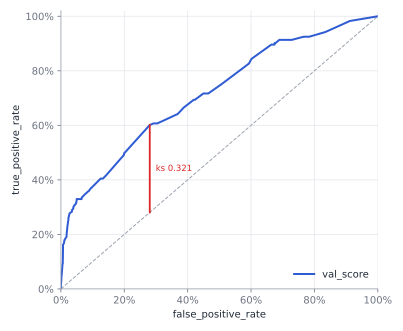

Model performance#
kivi.metrics measures how well a score separates events from non-events. roc_auc(), gini() and ks() summarize the ranking in one number, and roc_table() lists the points of the ROC curve behind them. roc_auc_interval() gives the AUC a standard error and a confidence interval, and delong_test() tests whether two scores of the same customers rank equally well. gains_table() breaks the ranking down by score band, and brier_score() checks predicted probabilities against the outcomes.
Performance is measured once the model is scaled to a Scorecard, and before its probabilities are checked in Calibration.
Definitions#
For \(n_1\) events and \(n_0\) non-events, let \(R_1\) be the sum of the ranks of the events among all scores, where tied scores share their average rank. The area under the ROC curve and the Gini coefficient are
The AUC is the probability that a randomly chosen event scores higher than a randomly chosen non-event, with ties counted as one half. A score unrelated to the target gives an AUC of about 0.5 and a Gini of about 0.
Let \(F_1\) and \(F_0\) be the empirical distribution functions of the scores of events and of non-events. The Kolmogorov-Smirnov statistic is their largest gap:
The gap is taken in absolute value, as in the two-sample test. KS therefore says nothing about the direction of the score, and its largest gap can come from a range of scores where the ranking is reversed. Read it together with the Gini.
Flagging every customer who scores at or above a threshold \(t\) catches a share \(\mathrm{TPR}(t)\) of the events, the true positive rate, and a share \(\mathrm{FPR}(t)\) of the non-events, the false positive rate. The ROC curve joins the points \((\mathrm{FPR}(t), \mathrm{TPR}(t))\) from the highest threshold to the lowest. The AUC is the area under it, and the KS is the largest gap \(\lvert \mathrm{TPR}(t) - \mathrm{FPR}(t) \rvert\) between the two rates. Tied scores move the curve diagonally, so the area counts a tied pair as one half, as the AUC does.
A worked example#
Three of these six customers are events. Of the nine pairs of an event and a non-event, six are ordered correctly, two are not, and one is tied at 0.4, so the AUC is \((6 + 0.5) / 9\):
>>> from kivi.metrics import gini, ks, roc_auc
>>> score = [0.1, 0.4, 0.4, 0.8, 0.7, 0.9]
>>> target = [0, 0, 1, 0, 1, 1]
>>> round(roc_auc(score, target), 4)
0.7222
>>> round(gini(score, target), 4)
0.4444
At a cut-off of 0.4, two thirds of the non-events but only one third of the events score at or below it. No cut-off separates the two classes further, so the KS is one third:
>>> round(ks(score, target), 4)
0.3333
The ROC table has one row for each of the five distinct scores, after a first row at infinity that flags nobody. At 0.4 it flags the tied event and non-event together, so the curve moves diagonally from (1/3, 2/3) to (2/3, 1):
>>> from kivi.metrics import roc_table
>>> roc_table(score, target)[
... ["cum_non_event", "cum_event", "false_positive_rate", "true_positive_rate"]
... ].round(3)
cum_non_event cum_event false_positive_rate true_positive_rate
threshold
inf 0 0 0.000 0.000
0.9 0 1 0.000 0.333
0.8 1 1 0.333 0.333
0.7 1 2 0.333 0.667
0.4 2 3 0.667 1.000
0.1 3 3 1.000 1.000
The trapezoids under the curve have the areas 1/9 from 0.9 to 0.8, 5/18 from 0.7 to 0.4 and 1/3 from 0.4 to 0.1, which add up to the AUC of 13/18. The largest gap between the two rates is the KS of 1/3.
Score direction#
Every function expects a score that is higher for a higher event probability, such as a predicted probability of default (PD). Scorecard points run the other way, because more points mean a lower risk, so negate them before passing them in: roc_auc(-points, target).
Every function takes the score first and the target second, as woe_table(groups, target) takes the groups first. scikit-learn’s metrics take the target first, so check the order when porting code from them.
As in woe_table(), the target is 1 for an event and 0 for a non-event. Two Series must share the same index; arrays and lists are matched by position, as Conventions describes for every function. Scores must be finite, so decide how missing values are scored before evaluating the model.
Evaluating a WOE score#
The bank data give a more realistic example. The score below adds up the WOE values of four variables, fitted on the development sample. A higher WOE means a higher event rate, so the sum already runs in the direction the metrics expect. A scorecard would weight the variables with a logistic regression; the metrics treat any score in the same way.
>>> import numpy as np
>>> import pandas as pd
>>> from kivi.datasets import Dataset
>>> from kivi.woe import woe_table, woe_transform
>>> data = Dataset.bank_data()
>>> development, validation = data.iloc[:3000], data.iloc[3000:]
>>> def to_groups(frame):
... return pd.DataFrame({
... "poutcome": frame["poutcome"],
... "contact": frame["contact"],
... "housing": frame["housing"],
... "age": pd.cut(frame["age"], [-np.inf, 25, 35, 45, 55, 65, np.inf]),
... })
>>> dev_groups = to_groups(development)
>>> tables = {column: woe_table(dev_groups[column], development["target"]) for column in dev_groups}
>>> def woe_score(frame):
... groups = to_groups(frame)
... return pd.DataFrame({
... column: woe_transform(groups[column], tables[column]) for column in groups
... }).sum(axis=1)
>>> dev_score, val_score = woe_score(development), woe_score(validation)
Measure the score on both samples. The validation rows played no part in fitting the WOE values, so they show how the score holds up on new customers:
>>> samples = {
... "development": (dev_score, development["target"]),
... "validation": (val_score, validation["target"]),
... }
>>> pd.DataFrame({
... name: {"auc": roc_auc(s, y), "gini": gini(s, y), "ks": ks(s, y)}
... for name, (s, y) in samples.items()
... }).round(3)
development validation
auc 0.686 0.716
gini 0.372 0.431
ks 0.265 0.321
A clear drop from development to validation would point to overfitting. Here the validation values are even slightly higher, which is within the sampling noise of 173 validation events.
Points that fall as the risk rises rank the customers in the opposite order. Passed as they are, they give an AUC below 0.5 and a negative Gini; negated, they give the values above. KS is the same in both directions, so it cannot reveal a reversed score:
>>> points = 600 - 50 * val_score
>>> y = validation["target"]
>>> [round(roc_auc(points, y), 3), round(roc_auc(-points, y), 3)]
[0.284, 0.716]
>>> [round(ks(points, y), 3), round(ks(-points, y), 3)]
[0.321, 0.321]
Note
No threshold makes a Gini or a KS good in general: the values that can be reached depend on the portfolio, the target definition and the data available. Compare a new score with the one it replaces on the same validation sample.
ROC curve#
roc_table() lists the points of the ROC curve, one row per distinct score from the highest to the lowest, after a first row at infinity. Each row counts the events and non-events that score at or above its threshold, in cum_event and cum_non_event, and divides them by all events and all non-events to give true_positive_rate and false_positive_rate. precision is the event rate among the customers it flags. On the validation sample the WOE score takes 79 distinct values:
>>> from kivi.metrics import roc_table
>>> roc = roc_table(val_score, y)
>>> len(roc)
80
The trapezoids under the curve add up to the AUC, and the largest gap between the two rates is the KS:
>>> fpr = roc["false_positive_rate"].to_numpy()
>>> tpr = roc["true_positive_rate"].to_numpy()
>>> round(float(np.sum(np.diff(fpr) * (tpr[1:] + tpr[:-1]) / 2)), 3)
0.716
>>> gap = roc["true_positive_rate"] - roc["false_positive_rate"]
>>> print(f"{gap.max():.3f} = {ks(val_score, y):.3f}")
0.321 = 0.321
The threshold with the largest gap flags 104 of the 173 events, a true positive rate of 60%, but only 378 of the 1,348 non-events. About one in five of the customers it flags is an event, twice the event rate of the sample:
>>> roc.loc[[gap.idxmax()], ["cum_event", "cum_non_event", "true_positive_rate", "precision"]].round(3)
cum_event cum_non_event true_positive_rate precision
threshold
0.284263 104 378 0.601 0.216

ROC curve of the WOE score on the validation sample. The vertical segment at the threshold with the largest gap between the two rates is the KS; the dashed diagonal is a random ordering.#
The rates are the cum_event_share and cum_non_event_share of a gains table with one band per distinct score, and scikit-learn’s roc_curve(target, score, drop_intermediate=False) gives the same points.
Confidence interval of the AUC#
Another sample of customers would give another AUC. roc_auc_interval() estimates the standard error of the AUC by the method of DeLong, DeLong and Clarke-Pearson (1988), which makes no assumption about the distribution of the scores. Each event gets a placement value, the share of non-events that score below it, and each non-event the share of events that score above it, with ties counted as one half. Both sets of placement values average to the AUC \(\hat\theta\). With \(n_1\) events and \(n_0\) non-events, as in the definitions above, the variance of the AUC is estimated by
where \(S_{10}\) and \(S_{01}\) are the sample variances of the placement values of the events and of the non-events. The interval at the confidence level is \(\hat\theta \pm z \, \mathrm{SE}\), with the normal quantile \(z\), which is 1.96 for the default level of 0.95, and it is cut off at 0 and 1. The Gini coefficient gets the same interval, rescaled to \(2\,\mathrm{AUC} - 1\).
For the six customers of the worked example, the placement values of the events are 1/2, 2/3 and 1 and those of the non-events 1, 5/6 and 1/3. Their sample variances are 7/108 and 13/108, so \(\mathrm{SE}^2 = 5/81\) and the standard error is 0.248:
>>> from kivi.metrics import roc_auc_interval
>>> roc_auc_interval(score, target).round(3)
estimate se lower upper
auc 0.722 0.248 0.235 1.0
gini 0.444 0.497 -0.529 1.0
On the validation sample, the AUC of 0.716 is known to about 0.04 either way:
>>> roc_auc_interval(val_score, y).round(3)
estimate se lower upper
auc 0.716 0.022 0.673 0.759
gini 0.431 0.044 0.346 0.517
The development and validation samples hold different customers, so their AUCs can be treated as independent, with a difference whose standard error is \(\sqrt{\mathrm{SE}_1^2 + \mathrm{SE}_2^2}\). This is only a rough check, because the WOE values were fitted on the development sample, whose AUC is therefore optimistic. The difference between the two samples is well within the noise:
>>> import math
>>> dev, val = (roc_auc_interval(s, t).loc["auc"] for s, t in samples.values())
>>> z = (val["estimate"] - dev["estimate"]) / math.hypot(dev["se"], val["se"])
>>> print(f"z = {z:.2f}, p = {math.erfc(abs(z) / math.sqrt(2)):.2f}")
z = 1.10, p = 0.27
Comparing two scores#
A new score, such as a challenger to the model in use, is best compared with the current one on the same customers. Both AUCs then come from the same pairs of events and non-events, so they are correlated, and their difference is known more precisely than that of two independent samples. delong_test() estimates its standard error from the differences between the placement values of the two scores, and tests whether the two AUCs are equal.
The WOE score adds up the WOE values of its variables, so a new variable joins it by adding its WOE. The two new scores below add month or loan to the four variables of the current score:
>>> from kivi.metrics import delong_test
>>> def with_variable(column):
... table = woe_table(development[column], development["target"])
... return val_score + woe_transform(validation[column], table)
>>> pd.DataFrame({
... column: delong_test(val_score, with_variable(column), y) for column in ["month", "loan"]
... }).round(4)
month loan
current_auc 0.7157 0.7157
new_auc 0.7403 0.7253
difference 0.0246 0.0096
se 0.0105 0.0064
lower 0.0041 -0.0029
upper 0.0451 0.0221
z 2.3509 1.5015
p_value 0.0187 0.1332
ROC curves of the current score and of the scores with month or loan added, on the validation sample. month lifts the curve at false positive rates between about 5% and 45%; the curve with loan stays close to the current one.#
difference is new_auc minus current_auc, lower and upper bound it at the confidence level, and p_value is the two-sided p-value of z. Adding month raises the AUC by 0.025, and the interval of the gain excludes 0. The gain of 0.010 from loan could be chance (p = 0.13), although its standard error of 0.006 is a third of that of either AUC on its own. For a one-sided test that the new score ranks better, halve p_value when z is positive.
Gains table#
gains_table() sorts the sample into score bands, from the highest scores to the lowest. Each row shows the event rate of its band and the share of all events found by reviewing that band and every band above it. The default bins=10 cuts the sample at the edges of bin_edges(score, bins=10), and tied scores always share a band.
In monitoring, fix the bands on the development sample so that every later sample is cut at the same scores. Fit the edges with bin_edges() and round them to readable cut-offs:
>>> from kivi.binning import bin_edges
>>> from kivi.metrics import gains_table
>>> edges = bin_edges(dev_score, bins=5).round(2)
>>> edges
array([ -inf, -1.46, -0.38, 0.15, 0.32, inf])
>>> gains = gains_table(val_score, y, bins=edges)
>>> gains[["total", "event", "event_rate", "lift", "cum_event_share", "ks"]].round(3)
total event event_rate lift cum_event_share ks
bin
(0.32, inf] 264 72 0.273 2.398 0.416 0.274
(0.15, 0.32] 344 39 0.113 0.997 0.642 0.273
(-0.38, 0.15] 344 34 0.099 0.869 0.838 0.239
(-1.46, -0.38] 241 15 0.062 0.547 0.925 0.159
(-inf, -1.46] 328 13 0.040 0.348 1.000 0.000

Left: the event rate falls from the top score band to the bottom one; the dashed line is the event rate of the whole sample. Right: the gains curve rises well above the diagonal of a random ordering.#
The top band holds 17% of the validation customers (264 of 1,521) but 42% of the events, so its event rate is 2.4 times that of the whole sample. The table checks the gap between the two classes only at the four interior cut-offs, so its largest ks stays below the KS over all scores:
>>> print(f"{gains['ks'].max():.3f} < {ks(val_score, y):.3f}")
0.274 < 0.321
Every band is reported, including a band that no customer falls into, so two samples cut on the same edges give tables with the same rows. Their total columns then give the PSI of the score bands, here far below 0.1, the usual upper bound of a small shift (see Population stability index):
>>> from kivi.stability import psi
>>> dev_gains = gains_table(dev_score, development["target"], bins=edges)
>>> round(psi(dev_gains["total"], gains["total"]), 4)
0.0025
Reading the result#
Column |
Meaning |
|---|---|
|
Non-events, events and all observations in the band, as in |
|
|
|
The event rate of the band divided by the event rate of the whole sample. |
|
Shares of all non-events and of all events in this band and the bands above it. |
|
Share of all observations in this band and the bands above it. Plotting |
|
The absolute gap between |
|
|
Brier score#
The ranking measures ignore the probability scale: any increasing transformation of the score gives the same AUC, Gini and KS. When a model predicts probabilities, for example a PD used for pricing or provisions, also compare them with the observed outcomes. brier_score() is the mean squared difference between the probability \(p_i\) and the outcome \(y_i\), so a lower value is better:
The example below predicts the probability of each validation customer by the development event rate of the customer’s poutcome group, and compares it with predicting the development event rate for everyone:
>>> from kivi.metrics import brier_score
>>> rates = development.groupby("poutcome")["target"].mean()
>>> by_group = validation["poutcome"].map(rates)
>>> overall = np.full(len(validation), development["target"].mean())
>>> [round(brier_score(by_group, y), 4), round(brier_score(overall, y), 4)]
[0.0907, 0.1008]
The group rates lower the Brier score by about 10% compared with the constant forecast. Unlike the ranking measures, the Brier score needs no events in the sample, so it can also be computed for a period without any.
Sample weights#
Validation samples often keep every event but only some of the non-events. Every function of kivi.metrics takes weights, one non-negative weight per observation matched like the target, and then counts sums of weights instead of observations. Integer weights give the same result as repeating rows, for gains_table() on fixed edges: with an integer bins, the weighted quantiles of bin_edges() use the inverted CDF and can give other edges than the repeated rows. To weight a sample back to the population, give each observation the inverse of its sampling rate. Below, every event of the validation sample is kept but only every second non-event:
>>> non_events_so_far = (y == 0).cumsum()
>>> kept = (y == 1) | (non_events_so_far % 2 == 0)
>>> sample_score, sample_y = val_score[kept], y[kept]
>>> weights = np.where(sample_y == 1, 1.0, 2.0)
>>> pd.DataFrame({
... "all": gains_table(val_score, y, bins=edges)["event_rate"],
... "sample": gains_table(sample_score, sample_y, bins=edges)["event_rate"],
... "weighted": gains_table(sample_score, sample_y, bins=edges, weights=weights)[
... "event_rate"
... ],
... }).round(3)
all sample weighted
bin
(0.32, inf] 0.273 0.409 0.257
(0.15, 0.32] 0.113 0.203 0.113
(-0.38, 0.15] 0.099 0.185 0.102
(-1.46, -0.38] 0.062 0.125 0.067
(-inf, -1.46] 0.040 0.074 0.039
Without weights the sample has twice as many events per non-event as the population, and every band’s event rate is inflated. The weights restore rates close to those of all customers. The ranking measures do not change, because a weight that is the same for every observation of a class cancels out of the AUC, the Gini and the KS:
>>> [round(roc_auc(sample_score, sample_y), 4), round(roc_auc(sample_score, sample_y, weights=weights), 4)]
[0.7073, 0.7073]
Weights that differ within a class, such as the inverse sampling rates of a stratified sample, do change them.
roc_auc_interval() and delong_test() read weights as frequency weights: an observation of weight \(w\) counts as \(w\) observations. Integer weights therefore give the same standard error as repeating rows, which suits data aggregated into counts. The weights above stand for the non-events left out of the sample, so they give a standard error as small as that of all customers, although the sample holds only half of the non-events:
>>> pd.DataFrame({
... "sample": roc_auc_interval(sample_score, sample_y).loc["auc"],
... "weighted": roc_auc_interval(sample_score, sample_y, weights=weights).loc["auc"],
... "all": roc_auc_interval(val_score, y).loc["auc"],
... }).T.round(4)
estimate se lower upper
sample 0.7073 0.0227 0.6627 0.7519
weighted 0.7073 0.0218 0.6645 0.7501
all 0.7157 0.0219 0.6728 0.7587
A weight that is the same for every observation of a class leaves the AUC unchanged, so compute its interval without such weights.
Limits#
The intervals and the test rest on a normal approximation, which is poor for an AUC close to 0 or 1 and for a class with few observations. The standard error is 0 whenever the placement values are constant within each class, as they are for a score that separates the classes perfectly, one that reverses them and a constant score, so the interval collapses to the estimate. Without weights, both functions need at least two events and two non-events, and with weights a total weight above 1 in each class.
delong_test()needs both scores on the same observations. For the AUCs of different samples, combine the standard errors of the two intervals, as in the comparison of the development and validation samples above.The standard errors measure the noise of sampling customers from one population. A shift of the population over time is a separate question, which Population stability index answers.
kivi gives no p-value for the KS statistic and no confidence bands for the ROC curve or the gains table.